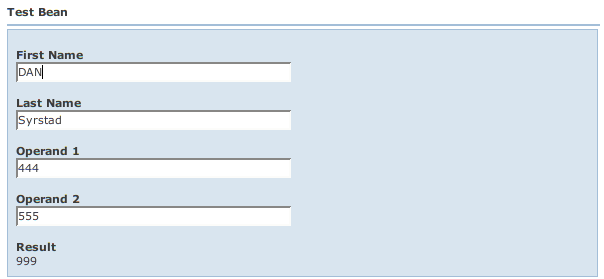

WWB is a method of programming by exception. You only tell WWB to do something when its not doing what you want. Most commonly, WWB doesn't really know a good way to order fields on the page. By default, they are in alphabetical order and laid out in a three column grid. Alphabetical order isn't typically want you want, though. To change this, you can customize the WWB metadata for a bean in a number of different ways. These methods include using:
You can choose to use just one, some, or all of these methods. Your choice will be determined by your own development practices. In the following sections we'll review each of these methods in detail.
Note that in addition to these metadata customization, most of the look and feel of the page can be customized via CSS. See the CssGuide for more information.
Let's say you don't like the generated label "Operand 1" and "Operand 2" in the previous section's example; or maybe you want to be able to localize them for another language. You can address this by adding a standard Wicket properties file called SimpleBeanPage.properties, such as:
operand1.label=Enter First Value operand2.label=Enter Second Value
The default labels for these fields will be overridden. This will override the labels for the operand1 and operand2 property on any bean that defines those properties. To restrict this, you may prefix the property key with the bean name, such as:
TestBean.operand1.label=Enter First Value TestBean.operand2.label=Enter Second Value
WWB always tries to find the label using a key with the bean name first, then it falls back to just the property name.
Note: If you want to use the WWB API or annotations instead of beanprops, you should still read this section. The features of the WWB API, annotations and beanprops are almost identical.
A "beanprops" file is named like your Wicket properties and html files - it has the same based name as your Page (or component that the BeanForm is embedded in).
Using the Simple Example from the previous section, let's customize it. Note that we're now using com.googlecode.wicketwebbeans.examples.simple.CustomSimpleBeanPage (we won't reiterate the trivial HTML and Page code here). This page also has a CustomSimpleBeanPage.beanprops file, seen below:
# Customize TestBean.
TestBean {
cols: 1;
props: firstName, lastName, operand1, operand2, result, -number;
}
This file tells WWB : whenever you see a TestBean bean, lay it out in a one-column grid ("cols: 1") and display the properties ("props") in the order specified. Note that you refer to JavaBean properties without the prefix of "get", "set", or "is" and the first character is lower case. Also in the "props" parameter, we say "-number". This tells WWB to remove the "number" property from the page.
Note that we didn't specify a package name when we wrote "TestBean". The package name is optional as long as the class name is not ambiguous. WWB matches the class name first using the simple name, then using the package and class name. Again, WWB typically matches the right class. If you have two bean classes with the same name but in different packages, you'll need to specify the package name as well.
If you run this example, you'll see something like:

If you want to do something more sophisticated, WWB supports Wicket resources in any beanprops value. For example, you could change CustomSimpleBeanPage.beanprops as follows:
# Customize TestBean.
TestBean {
cols: 1;
props:
firstName, lastName,
operand1{ label: "My ${propertyKey} Value" },
operand2,
result, -number;
}
You can see that you can specify parameters for each bean property. This example gives operand1 a label that is partially derived from the Wicket property "propertyKey". The "${xxx}" macro expression syntax substitutes the properties file value for key "xxx" into the value for the parameter. You can intermix text and multiple macro expressions in a single value. You can use the macro expression in any value, not just labels.
In CustomSimpleBeanPage, the bean is editable (i.e., not view-only), hence so are all the fields by default. The "result" property is view-only by default because it has no setter. If you were to pass "viewOnly" = true to the BeanMetaData constructor, all properties that were previously editable would be view-only. This is because bean properties inherit the bean's view-only setting. However, you can override this on a per-property basis. Let's say we change CustomSimpleBeanPage.beanprops as follows:
# Customize TestBean.
TestBean {
cols: 1;
props:
firstName,
lastName{ label: "Last Name (informational)"; viewOnly: true },
operand1,
operand2,
result, -number;
}
This causes the lastName property to get a different label and be view-only.
You can also customize actions. In the previous Actions section, we looked at how WWB automatically finds actions. Since the save and cancel actions in the example were not referenced in a beanprops file, WWB assumes that they are global actions for the Page. However, if wanted to place the clearLastName action next to the Last Name field, you can reference in the "props" parameter, like this:
# Actions Example
TestBean {
props: firstName, lastName, action.clearLastName,
operand1, operand2, result, -number;
}
It is referenced using the "action." prefix to distinguish it from a regular bean property. When you click the Clear Last Name button, the last name field will clear out.
You can also specify an "actions" parameter in the beanprops file to customize an action. You can remove actions by prefixing the action name with a dash '-'. You can also customize how an action behaves. In the action method, the AjaxRequestTarget is normally null when the action is called. If you further customize the action as shown here:
# Actions Example
TestBean {
actions: save{ ajax: true };
props: firstName, lastName, action.clearLastName,
operand1, operand2, result, -number;
}
it will cause the Save button to be invoked using Ajax. Hence, the AjaxRequestTarget parameter will be non-null when the action is invoked. You can also do other action customizations, as we'll see later. The end result looks like this:
WWB provides an annotation alternative to beanprops that is type-safe and supported in your favorite IDE. Not only does this provide type-safety, but it allows your IDE to provide code completion and documentation. Keep in mind you can always use a combination of WWB annotations and beanprops if you want. Annotations do not have to completely replace beanprops, or vice versa.
The WWB annotations are:
You can apply these annotations at various points in your code, as we'll see next. Your choice of where to apply the annotations will be based on your preferences and development practices. We'll examine each of these choices next.
Placing the WWB annotations on your Page (or other component containing the form) has the most direct correspondence to the beanprops file. A beanprops file is associated with your Page due to the Wicket naming convention, so placing annotations on your Page class is very similar. Let's look at an example: com.googlecode.wicketwebbeans.examples.annotations.AnnotationsOnPage.
Here you can see that the @Bean annotation declares two tabs (see Tabs), with certain properties on each. After the tab declarations, we customize the firstName and lastName properties using the @Property annotation. Also, there is an @Action annotation on the action method that customizes the action to have a confirmation message/prompt. You can see that we have fewer files now, we've elminated the beanprops file and just have two files: the Page and the HTML. These annotations are equivalent to the beanprops file:
TestBean {
actions: save{ confirm: "Are you sure you want to save?" };
tabs: General{
props:
firstName{required: true; maxLength: 10},
lastName{required: true},
idNumber
},
Address{
props:
address1, EMPTY, EMPTY,
address2, EMPTY, EMPTY, city, state, zip
};
}
You can also place annotations directly on your bean. This may arguably blur the line between the model and the view, but again it's your choice. If you're concerned about this, you can just use the more model-oriented @Property annotation and configure the view of your bean using annotations in your page or using beanprops file.
Take a look at com.googlecode.wicketwebbeans.examples.annotations.TestBeanWithAnnotations. These annotations functions almost exactly the same as the Page example. The only real difference is that we defined another WWB context (see BeanContexts) "someContext". We also placed the @Property annotations directly on the property methods and didn't have to specify @Bean.type (this is optional). If you look at com.googlecode.wicketwebbeans.examples.annotations.AnnotationsOnBeanPage Page code, you'll see that the @Action annotation is still on the action method.
You can see that it may be more natural to place the @Property annotations directly on the bean properties so both are defined in one place. If you JDO or JPA, you can also use their @Column annotations to annotate propertys. More on that later.
Sometimes you may want to reuse bean metadata in more than one page. If you don't want to place annotations on your bean, you can create a special class (or interface) that does nothing more than declare the annotations. com.googlecode.wicketwebbeans.examples.annotations.TestBeanMetaData is an example of this. It has annotations similar to that of com.googlecode.wicketwebbeans.examples.annotations.AnnotationsOnPage, but is reusable. To reuse it, simply pass the class to the BeanMetaData constructor:
BeanMetaData meta = new BeanMetaData(bean.getClass(), null, TestBeanMetaData.class, this, null, false);
See com.googlecode.wicketwebbeans.examples.annotations.AnnotationsOnMetaDataClassPage for the full Page code.
WWB comes with a Java API that mirrors the functionality of the annotations. You might choose to use the API over examples if, for example, you want to do conditional configuration of the metadata. As with annotations, the API can be used in combination with annotations and beanprops.
The WWB API is comprised of:
Here's an example of the API. It is equivalent to the annotations example (com.googlecode.wicketwebbeans.examples.api.ApiPage):
// Create the meta data
JBean jbean = new JBean(TestBean.class)
.tabs(
new JTab("General").propertyNames("firstName", "lastName", "idNumber"),
new JTab("Address")
.propertyNames("address1", EMPTY, EMPTY,
"address2", EMPTY, EMPTY, "city", "state", "zip")
)
// Customize certain properties from above.
.properties(
new JProperty("firstName").required(true).maxLength(10),
new JProperty("lastName").required(true)
)
.actions( new JAction("save").confirm("Are you sure you want to save?") );
As previously mentioned, if your beans use JDO or JPA @Column annotations, WWB will extract certain information from them.
JPA @Column annotations are based on javax.persistence.Column. It uses the following attributes:
JDO @Column annotations must come from javax.jdo.annotations.Column - vendor-specific versions of @Column are not supported.
Since you may use a combination of beanprops, WWB annotations, and JDO/JPA annotations, it is helpful to understand the order in which they are processed. One type of metadata can augment another, but if two specifications collide, you need to know which one takes precedence. For example, these two annotations declared in separate places don't collide, they augment each other:
@Property(name = "address", maxLength = 10) // Defined on the bean
@Property(name = "address", required = true) // Defined on the Page
But these do collide because the specify the same attribute:
@Property(name = "address", required = false) // Defined on the bean
@Property(name = "address", required = true) // Defined on the Page
So which one takes precedence - is required true or false? WWB derives metadata in the following order: